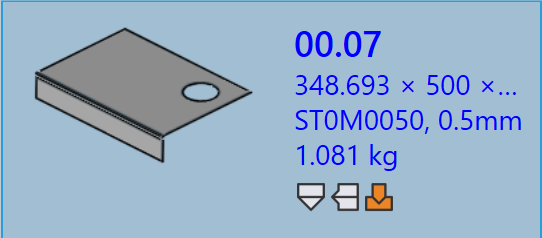

부품 패널
이 섹션에서는 부품 인스턴스를 관리하는 데 사용되는 Re-import, Re-tool, Rename, Export outputs 등과 같은 부품 관련 작업을 설명합니다.

|
|
Re-import
-
부품을 마우스 오른쪽 버튼으로 클릭하고 Re-import… 를 클릭합니다.
-
자동 툴링 및 수동 툴링 인스턴스를 포함하여 모든 머신의 선택된 부품 툴링 인스턴스가 모두 지워집니다.
-
기존 출력 파일(CAD, Bend 및 Cut)이 제거됩니다.
-
부품을 다시 가져오고 모든 머신에 대해 새로운 CAD 검증 및 툴링이 적용됩니다.
-
업데이트된 툴링 결과를 기반으로 새 출력 파일이 생성됩니다.
Re-tool
-
부품을 마우스 오른쪽 버튼으로 클릭하고 Re-tool… 를 클릭합니다.
-
모든 머신이 기본적으로 선택되며 Laser, Punch, Panel 및 Press brake 로 그룹화됩니다.
-
OK 를 클릭하여 계속합니다. 이렇게 하면 선택한 머신에 대한 자동 툴링 및 수동 툴링 인스턴스가 모두 제거되고 관련 출력 파일이 삭제됩니다.
-
Retain existing outputs 확인란을 선택하면 이전에 출력이 제거된 부품만 다시 툴링되고 다른 출력은 그대로 유지됩니다. 선택 취소하면 선택한 머신에 대한 모든 출력 파일이 제거되고 다시 툴링하는 동안 재생성됩니다.
|
Rename
이 섹션에서는 TruSmartCAM 에서 하나 또는 여러 부품의 이름을 변경하는 방법을 설명합니다.
-
부품을 마우스 오른쪽 버튼으로 클릭하고 Rename… 를 클릭합니다.
-
현재 부품 이름을 표시하는 이름 변경 확인 대화 상자가 나타납니다.
-
새 이름을 입력하고 체크 표시 ✓ 아이콘을 클릭하여 확인하거나 X 표시 ✗ 아이콘을 클릭하여 이름 변경 작업을 취소합니다.
-
여러 부품의 이름을 변경하려면 필요한 부품을 모두 선택한 다음 그중 하나를 마우스 오른쪽 버튼으로 클릭하고 Rename… 를 클릭합니다.
-
선택한 부품의 총 개수와 함께 확인 대화 상자가 나타납니다.
-
각 부품에 대해 새 이름을 입력하고 체크 표시 ✓ 아이콘을 하나씩 클릭하여 확인합니다.
-
부품을 잘못 선택한 경우 X 표시 ✗ 아이콘을 클릭하여 취소합니다. 또는 부품을 마우스 오른쪽 버튼으로 클릭하고 Cancel Rename 를 클릭하여 이름 변경을 건너뛸 수 있습니다.
Export outputs
부품 재료 할당
Material not assigned 상태의 부품은 추가 처리 전에 업데이트해야 합니다. 아래 단계에서는 재료를 할당하는 방법을 설명합니다.
-
Material not assigned 상태를 표시하는 부품을 마우스 오른쪽 버튼으로 클릭하고 Assign Material… 를 선택합니다.
-
Assign Material 창이 열립니다.
-
대화 상자에는 네 가지 섹션이 있습니다:
-
Suggestions - 가져온 부품의 두께를 기반으로 원자재를 자동으로 제안합니다.
-
All Materials - TruSmartCAM 에 정의된 모든 재료 유형을 나열합니다.
-
All Raw-Materials - 시스템에서 사용 가능한 모든 원자재를 표시합니다.
-
Used Raw-Materials - 빠른 액세스를 위해 가장 최근에 사용한 원자재를 표시합니다.
-
-
상단의 Search 필드를 사용하여 재료를 빠르게 찾을 수 있습니다. 예를 들어 "steel" 을 입력하면 세 섹션에 걸쳐 일치하는 모든 재료가 표시됩니다.
-
필터링된 목록에서 Raw-Material 목록에서 필요한 재료(예: Steel-25)를 선택합니다.
-
선택한 재료가 부품에 할당됩니다.
Rolling direction
Rolling direction 은(는) 부품에서 결의 방향을 나타내며, 이는 부품이 절단되고 처리되는 방식에 영향을 줄 수 있습니다. 이 옵션을 사용하면 Part Library 에서 부품에 대한 Rolling direction 을 지정할 수 있습니다. 선택한 방향에 따라 부품은 사용 가능한 머신에서 절단하기 위해 올바른 방향으로 배치됩니다.
-
Part Library 또는 Job 창에서 부품 타일을 마우스 오른쪽 버튼으로 클릭합니다.
-
선호하는 압연 방향을 선택합니다:
-
None
-
Horizontal
-
Vertical
-
-
선택한 압연 방향에 따라 사용 가능한 모든 절단 머신에 대해 부품이 자동으로 다시 툴링됩니다.
-
부품 타일에는 아래와 같이 선택한 압연 방향이 표시됩니다:
